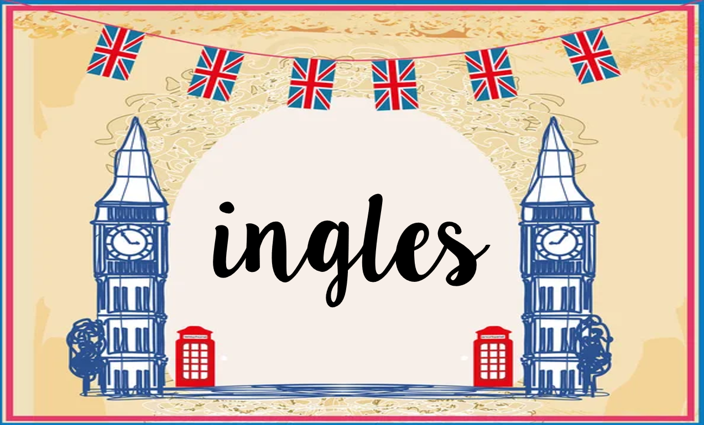

"A different language is a different vision of life"
ingles
El British Council estima que este pico excepcional en número de personas aprendiendo inglés se debe al alto porcentaje de adultos utilizando el inglés como idioma en el trabajo.
En Estados Unidos, donde el inglés es el idioma oficial, es el hogar de las ciudades tecnológicas y de negocios por internet más grandes del mundo, así que el inglés es también, extraoficialmente tal vez, el lenguaje de la web. Muchos podrían argumentar que es también la lengua del capitalismo, un concepto que en sí mismo creció entre un diálogo entre filosofías económicas estadounidenses e inglesas.
En general, la historia de la lengua inglesa se divide en tres secciones: inglés antiguo, inglés medio e inglés moderno.
Mientras que los lingüistas y estudiosos disputan acaloradamente estos términos, y exactamente cuándo o cómo comienza cada periodo, se observa un cambio notorio en el lenguaje durante estas tres fases.
Inglés antiguo o anglosajón, era una lengua profundamente germánica traída por las tribus que comenzaron a migrar a la islas británicas procedentes de Alemania en el siglo V, D.C. El inglés antiguo aún conserva algunas palabras cortas que podemos reconocer hoy (him; he – y sus derivados), pero la construcción de frases y vocabulario más complejo requiere una mayor atención.
El inglés medio, se llama así porque las reglas del anglosajón se encuentran sistemáticamente desglosadas y comprometidas por las diversas influencias de las invasiones vikingas, la conquista normanda (1066) y por supuesto el latín, que era la lengua de la iglesia. Empezamos a encontrar una mayor influencia de las lenguas romances de la Europa continental y un cambio en el sonido de la lengua.
El inglés moderno se considera que comenzó en el siglo XVI y se extiende hasta la actualidad. Se caracteriza por el ‘Great Vowel Shift’, que, con el apoyo de la invención de la imprenta y la creciente tecnología de comunicación generalizada (en papel y después, a través de la radio) condujo a un alargamiento y al ajuste de los sonidos de las vocales y una estandarización de la lengua hablada.
El inglés antiguo tiene a menudo una mala reputación entre los lingüistas; es vista como la lengua menos bonita y muchas veces la menos poética de las lenguas inglesas. Sin embargo, es la responsable de una gran parte de ella incluyendo los nombres Inglaterra e inglés, que se derivan del término Angles.
En el inglés medio podemos ver la influencia del nórdico antiguo y el francés normando. Tal vez una de las influencias significativas del nórdico antiguo en el inglés fue en la sintaxis y en el orden gramatical de las palabras. Al igual que los vikingos colonizaron Gran Bretaña, así también los patrones de la gramática inglesa tienen mucho que agradecer a las lenguas germánicas del norte, como el danés o el islandés.
Esto lo vemos más en el orden y la colocación de los verbos. El inglés, el danés y el islandés tienen estructuras similares en esta frase de ejemplo:
“I will never see you again”
= Danés: “Jeg vil aldrig se dig igen”
= Islandés: “Ég mun aldrei sjá þig aftur”
.. mientras que en holandés y en alemán el verbo principal se coloca al final (por ejemplo; holandés “Ik zal je nooit weer zien”; alemán “Ich werde dich nie wieder sehen”, literalmente, “I will you never again see”).
También vemos nuevas palabras que vienen del francés – palabras como ‘nature’, ‘table’, ‘hour’ (heure). De hecho, el francés es el responsable de gran parte del vocabulario del inglés moderno.
Se considera que el inglés moderno comenzó desde el siglo XVI y continúa hasta nuestros días. Toma sus pronombres y preposiciones y sus raíces gramaticales germánicas y nórdicas, agregando un extenso vocabulario con influencia latina y francesa. Combina esto con una armonización abrumadora de sonidos de las vocales, que se acercan a algo así como los sonidos del inglés que hoy conocemos.
La poesía de Shakespeare es un buen ejemplo – no solo rimaba al oído en el siglo XVI, sino que también rima al oído en el siglo XXI; y eso es gracias a la gradual estandarización de los diferentes sonidos vocálicos que influyeron en la composición de la lengua.
aprende ingles con: duolingo